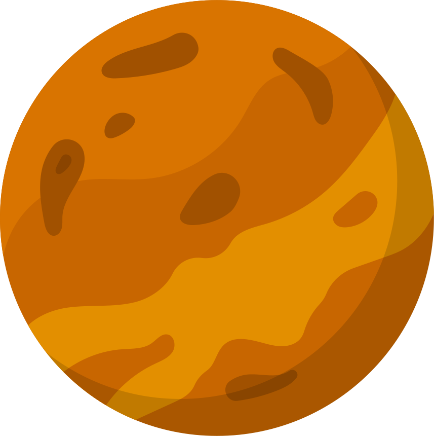
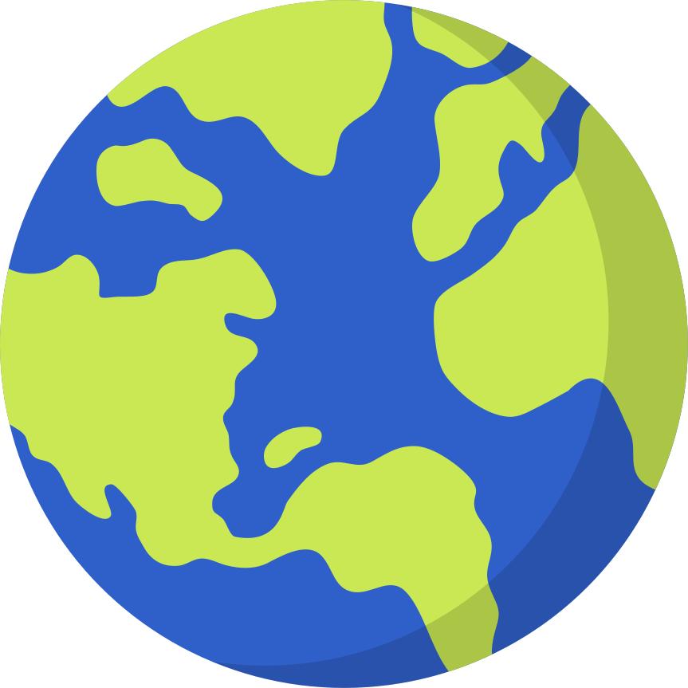
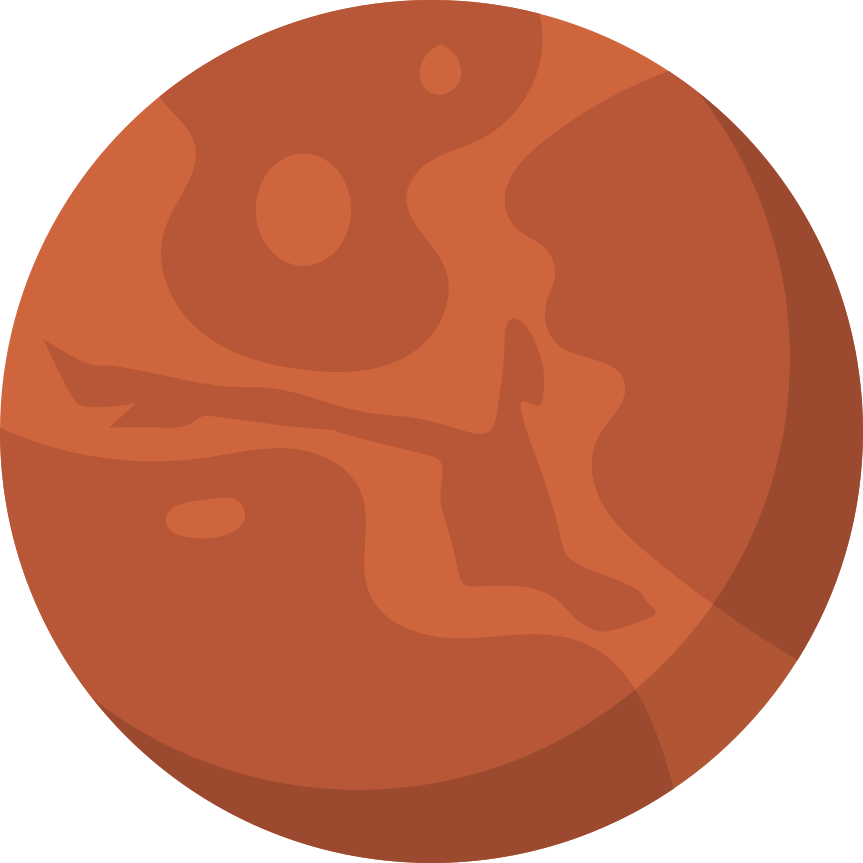
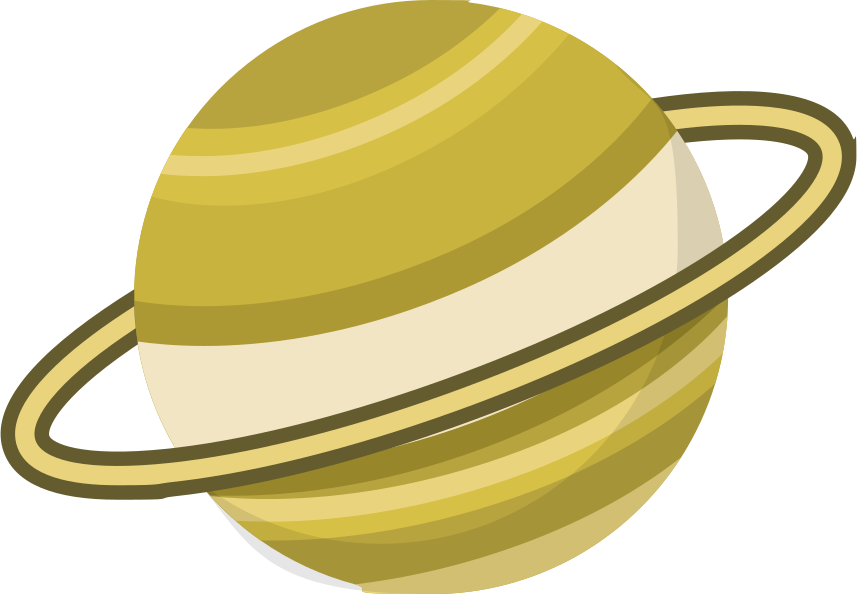
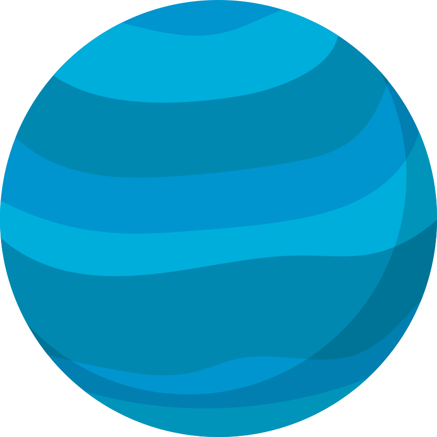

La Tesla Roadster, lancée dans l’espace en 2018 par SpaceX, voyage parmi les étoiles comme une "voiture de l’espace", avec un mannequin nommé Starman au volant et une vue spectaculaire sur la Terre (du moins au début). C’est un symbole amusant et surprenant de l’exploration spatiale moderne !

Soleil
Le Soleil est l’étoile au cœur de notre système solaire. C’est une énorme boule de gaz brûlant, principalement de l’hydrogène et de l’hélium. Sa chaleur et sa lumière rendent la vie possible sur Terre. Il est si grand qu’on pourrait mettre plus d’un million de Terres à l’intérieur ! Le Soleil est en fait une immense centrale nucléaire qui produit de l’énergie grâce à un processus appelé fusion. Sans lui, il n’y aurait ni lumière, ni chaleur, ni vie.

Mercure
Mercure est la plus petite planète du système solaire et aussi la plus proche du Soleil. Elle est un peu comme une boule de roche grise remplie de cratères, un peu comme la Lune. Comme elle est si proche du Soleil, la journée y est très chaude, atteignant jusqu’à 427°C, mais la nuit, il fait extrêmement froid, jusqu’à -173°C ! Mercure n’a presque pas d’atmosphère, donc aucun nuage ni vent pour protéger sa surface.
Venus
Vénus est souvent appelée la "sœur" de la Terre parce qu’elle a presque la même taille. Mais attention, Vénus est très différente ! Elle est enveloppée dans une épaisse couche de nuages toxiques qui emprisonnent la chaleur, ce qui en fait la planète la plus chaude du système solaire, avec une température de 462°C. Sur Vénus, un jour dure plus longtemps qu’une année, car elle tourne très lentement sur elle-même. Et en plus, elle tourne "à l’envers" par rapport aux autres planètes !

Terre
Notre planète, la Terre, est la seule connue où la vie existe. Elle a tout ce qu’il faut pour nous : de l’eau liquide, de l’air que nous pouvons respirer, et une température agréable. La Terre est recouverte d’océans, de forêts, de déserts et de montagnes. Elle tourne sur elle-même en 24 heures, ce qui fait alterner le jour et la nuit, et elle fait le tour du Soleil en 365 jours, ce qui donne les saisons.
Lune
La Lune est le seul satellite naturel de la Terre. C’est une boule de roche grise pleine de cratères. Elle tourne autour de la Terre en environ 28 jours, ce qui crée les phases de la Lune : pleine Lune, premier quartier, dernier quartier, etc. La gravité de la Lune est bien plus faible que celle de la Terre, donc si tu pouvais sauter là-bas, tu irais beaucoup plus haut ! Les astronautes y ont marché pour la première fois en 1969, lors de la mission Apollo 11.

Mars
Mars est souvent appelée la "planète rouge" à cause de sa couleur rouille, qui vient de la poussière de fer qui recouvre sa surface. C’est une planète froide et sèche, avec des températures moyennes de -63°C. Mars a les plus grandes montagnes du système solaire, comme Olympus Mons, un volcan trois fois plus haut que l’Everest ! Les scientifiques rêvent d’y envoyer des humains un jour, car elle pourrait être une deuxième maison pour nous.
Jupiter
Jupiter est la plus grosse planète du système solaire, une véritable géante faite principalement de gaz. Si grande qu’elle pourrait contenir plus de 1 300 Terres ! Jupiter est célèbre pour sa Grande Tache Rouge, une énorme tempête qui dure depuis des siècles. Elle a aussi plus de 80 lunes, dont certaines, comme Europa, pourraient cacher des océans sous leur surface glacée.

Saturne
Saturne est sans doute la plus belle planète du système solaire grâce à ses magnifiques anneaux. Ces anneaux ne sont pas solides, mais faits de milliards de morceaux de glace et de roche. Saturne est aussi une planète géante gazeuse, comme Jupiter. Elle a un grand nombre de lunes, dont Titan, qui est si grande qu’elle est plus grande que Mercure !
Uranus
Uranus est une planète glacée d’une belle couleur bleu-vert à cause du méthane dans son atmosphère. Elle est unique parce qu’elle est couchée sur le côté, comme si elle roulait autour du Soleil au lieu de tourner "debout". Elle est très froide, avec des températures qui descendent jusqu’à -195°C. Uranus est aussi entourée d’anneaux, mais ils sont beaucoup plus discrets que ceux de Saturne.

Neptune
Neptune est la planète la plus éloignée du Soleil. C’est une géante glacée de couleur bleu foncé, à cause de son atmosphère riche en méthane. Neptune est connue pour ses vents incroyablement forts, qui soufflent plus vite que le son ! Elle a aussi des anneaux fins et plusieurs lunes, comme Triton, qui est une des lunes les plus étranges du système solaire.